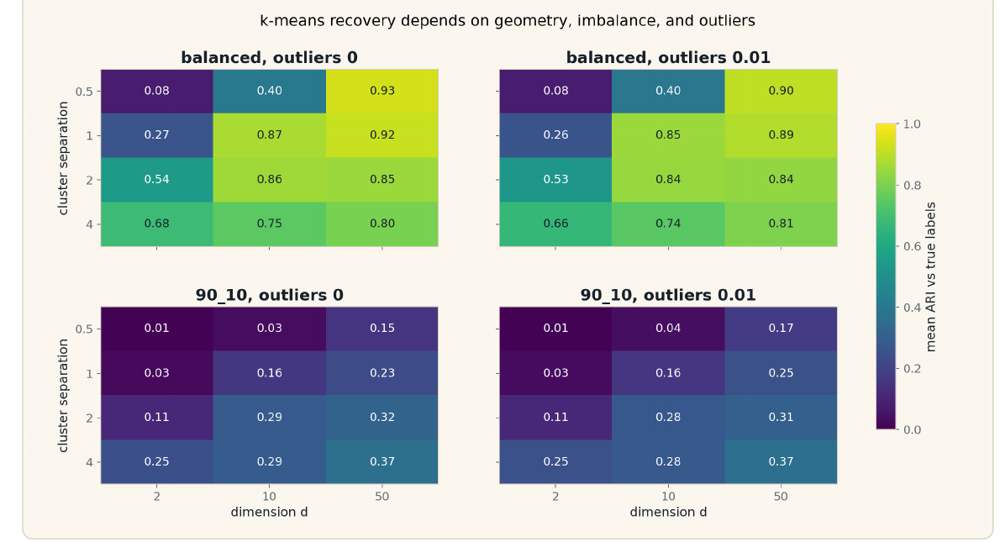
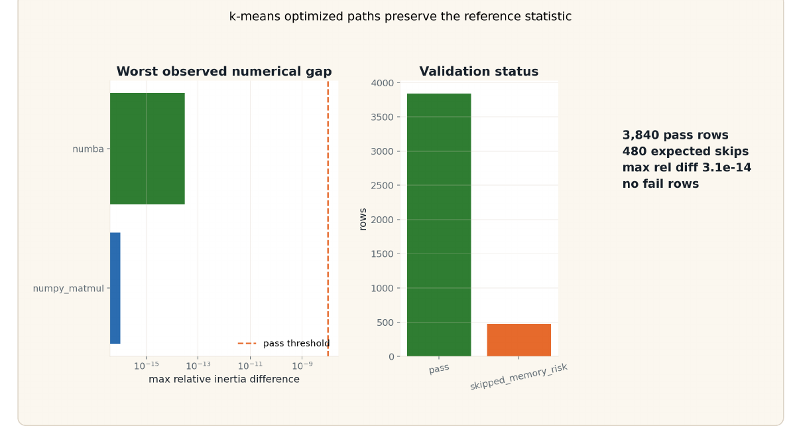
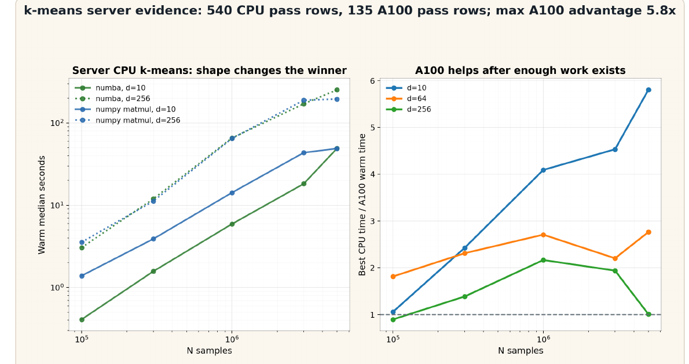
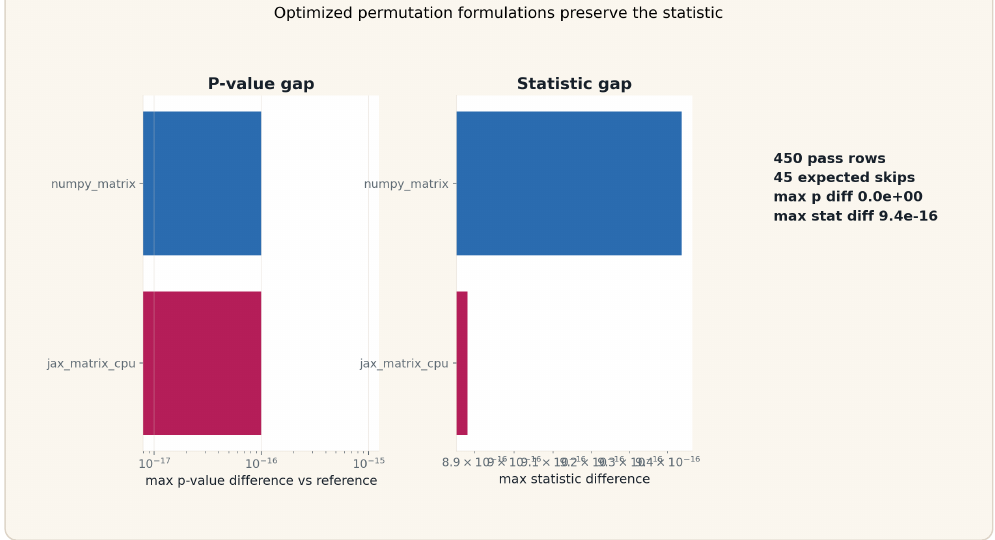
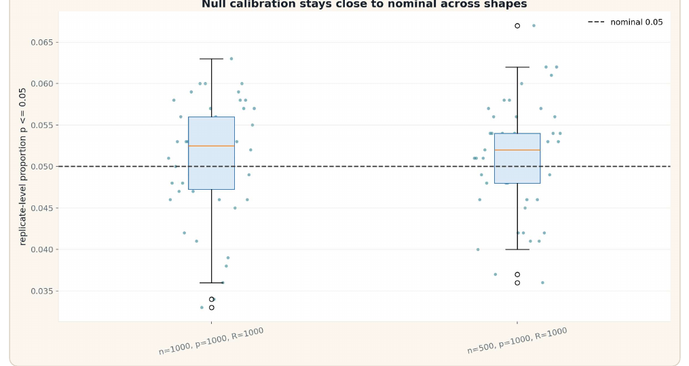
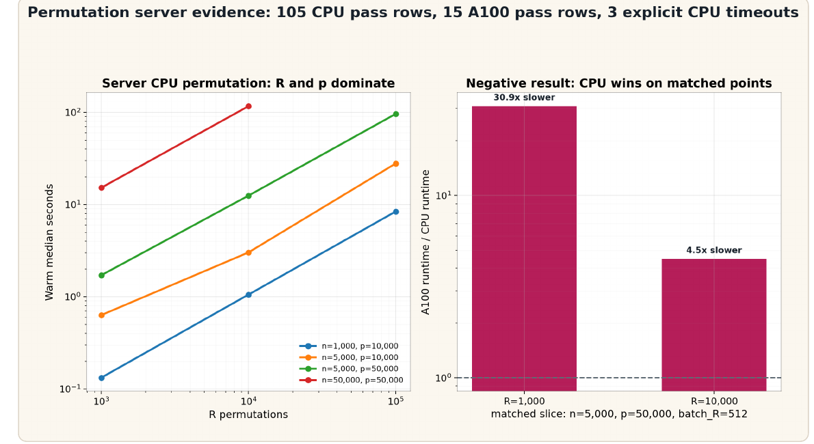
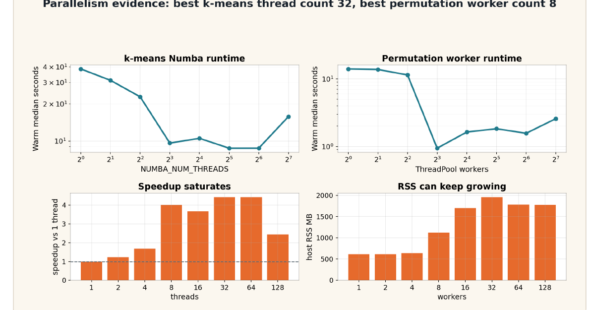
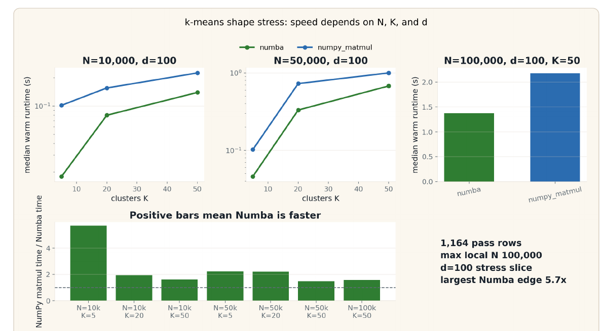
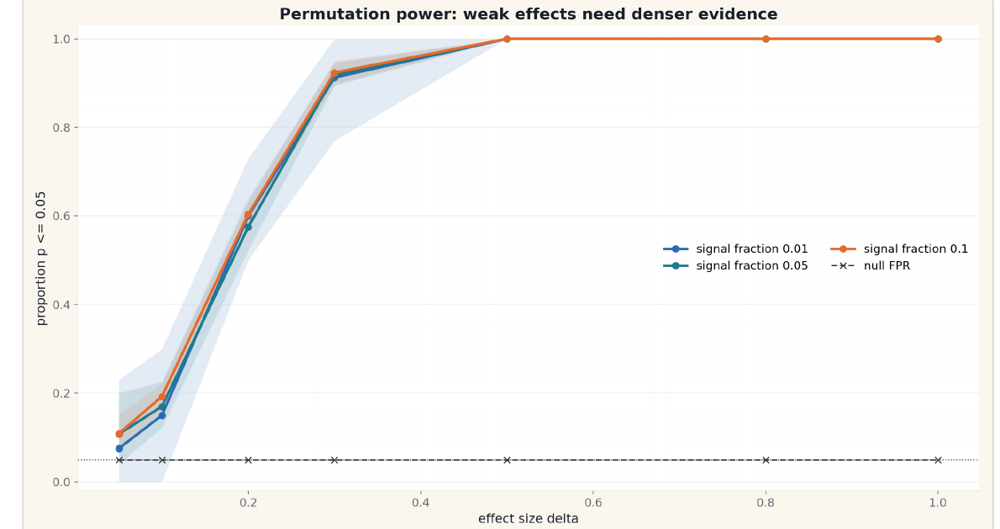
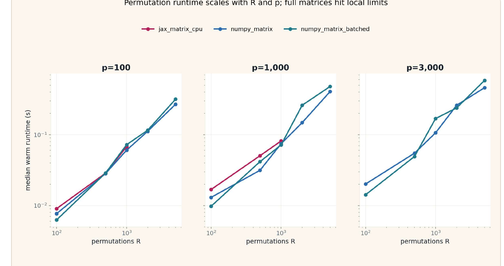

Breaking the Speed Limit
Fast statistical models with Python 3.14, Numba, and JAX - told from the workflow of a statistician.
Wenxin Jiang and Jian Yin - Department of Biostatistics, City University of Hong Kong
From a statistician's point of view, speed is only useful after trust
We use Python to move through the whole scientific loop: write the model, test the behavior, find hard cases, then accelerate the expensive pattern.
1. The method is still being learned
In practice, the exact statistical specification often becomes clearer through simulation: which assumptions matter, which cases fail, which outputs should be stable.
2. The reference is part of the science
Readable Python or NumPy code is not throwaway. It is the executable definition that optimized kernels must match.
3. Acceleration must preserve meaning
Numba, JAX, threads, and GPUs are useful only when they compute the same statistic on the same controlled scenarios.
Rule for the talk: a faster implementation that changes the statistic is not an optimization. It is a different method.
Simulation creates the answer key that real data does not give us
Known target
True clusters, null behavior, effect size, invariants, expected calibration, or exact reference output.
Known stress cases
Low separation, imbalance, outliers, high dimension, bad seeds, memory pressure, and worker overhead.
Known decision rule
Only variants that pass the statistical contract enter the runtime comparison.
Reference
Write code close to the math, even if it is slow.
Scenarios
Generate easy, null, alternative, and pathological cases.
Validate
Check recovery, calibration, equivalence, and numerical stability.
Optimize
Choose the smallest tool that removes the proven bottleneck.
Simulation-driven statistical computing is statistical CI
The testing instinct is familiar; the oracle is statistical behavior rather than one expected scalar.
Python is the control plane; the hotspot can move to the right engine
The point is not to make every line of Python magically fast. The point is to keep the model readable while moving the expensive computational pattern into NumPy, Numba, threads, or JAX when the simulation contract allows it.
k-means and permutation tests are two canonical statistical computing shapes
k-means
Statistical question: do we recover known clusters as geometry gets harder?
Compute pressure: assignment/update loops, distance computation, repeated iterations, temporary arrays.
Tool link: Numba for CPU loops; NumPy matmul for distance algebra; JAX/A100 only when the loop becomes large and regular enough.
Permutation test
Statistical question: does the null distribution stay calibrated across many features?
Compute pressure: thousands of independent label shuffles across a samples-by-features matrix.
Tool link: threads/processes for repetition; Numba for CPU kernels; JAX/A100 after rewriting the statistic as W @ X.
These are not chosen because they are exotic. They are chosen because many statistical workloads look like either iterative dependence or repeated simulation.
Different machines answer different questions
MacBook Air
Small, controlled simulation. Debugging. Reference equivalence. Developer experience.
Linux server CPU
Large shape. Parallelism. Threads/processes. Memory accounting and worker sweeps.
A100 GPU
Only after the computation becomes batched, array-shaped, and device-resident enough to matter.
Benchmark contract
- Correctness status before runtime.
- Cold first call and warm median.
- Memory, including child RSS for processes.
- Explicit unavailable rows for GPU/JIT/free-threaded tests.
JAX / GPU timing contract
- Always synchronize device work before timing.
- Label dtype and device.
- Separate end-to-end pipeline from kernel-only hypotheses.
- Do not report hoped-for speedups as measured results.
k-means as iterative simulation pressure
Same simulated data, same initialization, same statistic. Then vary separation, dimension, imbalance, outliers, K, N, and seeds.
A simple algorithm exposes the loop patterns in many statistical methods
Statistical target
Recover known clusters and preserve fixed-initialization inertia across implementations.
Failure modes
Low separation, high dimension, imbalanced clusters, outliers, bad initialization, empty clusters.
Python pressure
Interpreter loops, O(N*K*d) broadcast temporaries, BLAS-friendly distance identities, compiled loop kernels.
| Implementation idea | Why it is relevant | What simulation checks |
|---|---|---|
| Readable NumPy | Closest to the math; easiest to debug | Reference inertia and recovery |
| Numba loop | Compile assignment/update loops without giant temporary arrays | Same fixed-init result, faster CPU loop |
| NumPy matmul | Use distance algebra to move work into BLAS | Same statistic, better shape for large d/K |
| JAX/A100 | Large regular loops can become accelerator work | Device result matches reference before speed claims |
Recovery surfaces tell us which runtimes are meaningful

MacBook validation tier: 1,440 required scenarios covered.
Optimized paths must preserve the reference statistic

Full grid: 3,840 pass rows; 480 expected memory-risk skips; no failed optimized rows.
On the server, the winner depends on computational shape

Curated server run: 540 CPU pass rows and 135 A100 pass rows; max matched A100 edge 5.8x.
The tool choice follows the simulation signal
| Signal from the experiment | Likely tool | Reason |
|---|---|---|
| Reference behavior not stable | Do not optimize yet | The statistical contract is not ready. |
| Small K/d, scalar loops dominate | Numba | Fuses explicit loops with low extra memory. |
| Large K/d and dense distance work | NumPy matmul / BLAS | Algebraic rewrite can remove expensive broadcast temporaries. |
| Huge N and regular array program | JAX/A100 | Potential accelerator win after enough work exists. |
| Poor ARI under simulated truth | Revise method or scenario | Runtime is not the first question. |
k-means stands in for a large class of iterative statistical algorithms: EM, coordinate descent, optimization loops, and simulation-based estimators.
Permutation tests as resampling pressure
A simple inference procedure becomes expensive when we need thousands of null draws across a high-dimensional features matrix.
They expose the other common shape: independent statistical repetition
Biostatistics context
Feature-wise testing appears in gene expression, imaging, biomarkers, and other high-dimensional settings.
Statistical contract
Under the null, p-values should be calibrated; optimized p-values must match the reference using the same permutations.
Python pressure
Repeated random index work, shared arrays, process copies, thread ceilings, matrix batching, and GPU transfer overhead.
For programmers: this is the workload where "embarrassingly parallel" still has hard engineering details.
Same statistic, different computational formulation
Readable reference loop
perms = make_permutations(labels, R)
for r in range(R):
stat[r] = diff_mean(X, perms[r])
Matrix formulation
perms = make_permutations(labels, R) W = contrast_matrix(perms) stat = W @ X
The rewrite is allowed only because both paths are checked against the same permutations. Otherwise differences may be random-number differences, not implementation differences.
First, prove the matrix path matches the reference

MacBook correctness tier; JAX rows are CPU/x64 in this tier.
Then check the null simulation behaves statistically

Null calibration tier: expected behavior is close to nominal 0.05.
Server permutation gives a useful negative GPU result

Curated server run: 105 CPU pass rows, 15 A100 pass rows, and 3 explicit CPU timeouts.
The A100 permutation result is evidence, not embarrassment
Statistic passed
The matrix path preserved p-values against the reference in the correctness tier.
Speed claim failed
On the matched server slice, the current A100 path is slower than CPU.
Next question is clearer
Is the bottleneck W construction, host-device transfer, batch size, dtype, or the matrix multiply itself?
W @ X + collectionW @ X when W and X are already device-residentMore workers is not a moral victory

Track OMP_NUM_THREADS, MKL_NUM_THREADS, OPENBLAS_NUM_THREADS, NUMBA_NUM_THREADS, CPU affinity, and actual GIL state.
Python 3.14, Numba, and JAX solve different parts of the workflow
Python 3.14
Changes interpreter/runtime ceilings: free-threaded builds can help thread-friendly workloads; experimental JIT rows must be reported only when actually available and enabled.
Numba
Best fit when simulation identifies explicit numerical loops over arrays as the hotspot, especially CPU kernels where avoiding temporaries matters.
JAX / A100
Best fit when the statistic has been reformulated as a large batched array program and device execution can dominate transfer and compilation overhead.
The decision is not Python versus compiled languages. It is: keep Python as the scientific interface, then accelerate the pattern that simulation proves is expensive.
Codex can generate variants; the statistician owns the contract
Good Codex work
- Generate implementation variants.
- Build scenario-grid runners.
- Record environment metadata.
- Regenerate plots from CSVs.
- Keep result paths and READMEs consistent.
Human-owned decisions
- Define the statistic and null model.
- Choose scenario grids and failure criteria.
- Decide whether skips are honest.
- Interpret calibration, recovery, and negative speed evidence.
AI is a copilot for code generation and experiment hygiene, not an oracle for statistical truth.
Choose the smallest tool that preserves the statistic
| If the bottleneck is... | Prefer... | Why |
|---|---|---|
| Understanding or correctness | Python / NumPy reference | Debuggable, inspectable, close to the math. |
| Scalar CPU loops | Numba | High return without changing the algorithmic shape. |
| Repeated work over shared arrays | Threads / free-threaded Python / Numba | Avoid process copies; measure the actual runtime ceiling. |
| Process-isolated jobs | multiprocessing | Robust, but memory and startup cost need budgeting. |
| Large batched array programs | JAX / GPU | Accelerator-friendly only after reformulation. |
| Giant temporaries | Algebraic rewrite | Often safer than switching libraries blindly. |
Make the statistic testable, then make the bottleneck fast.
Clear enough to trust. Fast enough to scale.
github.com/lucajiang/FastStatisticalModels4Python
Evidence map: keep tiers separate
MacBook Air trust tier
k-means equivalence, recovery surfaces, permutation p-value equivalence, calibration, and power.
Linux server CPU scale tier
k-means shape scaling, Numba thread sweep, permutation R/p scaling, worker and memory sweeps.
A100 accelerator tier
JAX k-means break-even, permutation matrix reformulation, and matched negative result.
3,840
k-means local pass rows
450
permutation equivalence pass rows
540
server CPU k-means pass rows
135
A100 k-means pass rows
Shape stress: K and d become the bottleneck

Extra MacBook evidence: 1,164 shape-stress rows, all pass.
Permutation power rises with effect size

Backup statistical sanity check: weak effects need denser evidence; larger effects reach high power in this local curve.
Local permutation runtime follows computational shape

MacBook CPU only: useful for local validation, not a server or GPU leaderboard.
What the agent actually changed
Experiment surface
Replaced quick outputs with resumable MacBook evidence, server long-safe CSVs, and result READMEs.
Visualization surface
Regenerated figures from CSVs and removed charts that looked precise but were unreadable.
Repository surface
Updated documentation so future agents land on the current simulation contract.